96 / 137 completed runs. Fixed walls; original force law. Shading/error bars show seed SD. Missing runs are not physical phases.
Main findings · Methods and limitations · Run summary CSV
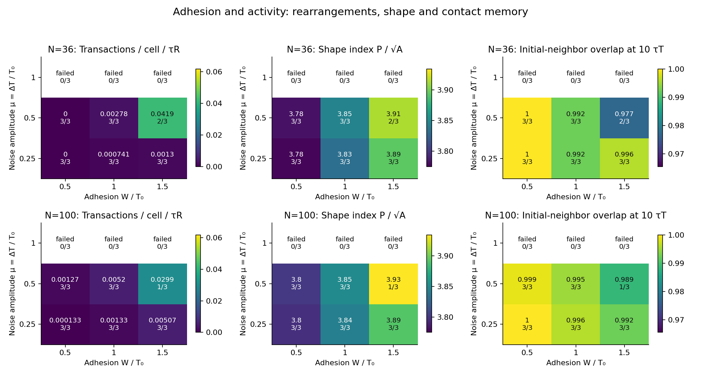
ρ=1.2, τT=10 τR, 5 τT warmup and 10 τT observation. Each tile is a mean over completed seeds; labels show accepted/attempted seeds. Failed trajectories are excluded, never assigned zero.
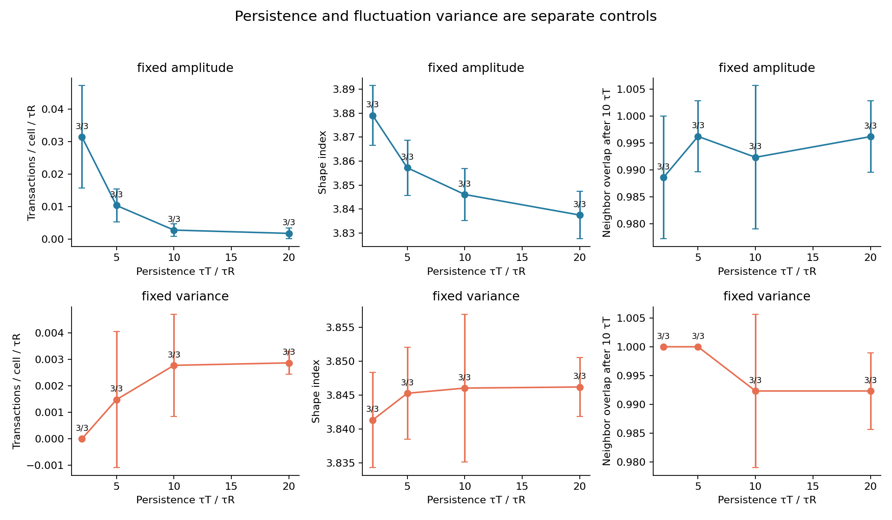
Mean ± seed SD. Fixed amplitude uses μ=0.5; fixed variance uses μ=0.5√[(2τT−dt)/(20−dt)]. This matches raw stationary Euler–Maruyama variance for a persistent contact, not its rectified effective force. All variants share τT=10 preparation. Durations scale with τT; τT=10 controls are duplicate runs, not independent replicas.
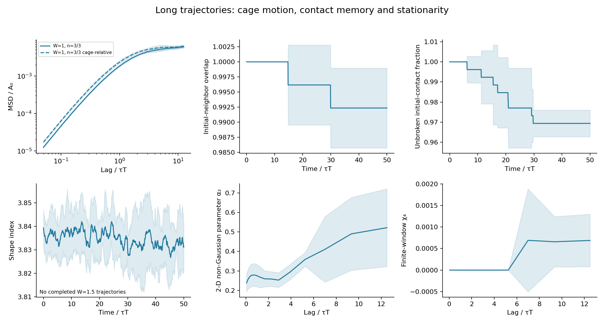
N=36, ρ=1.2, μ=0.5. Burn-in 20 τT; observation 50 τT. Bands are seed SD. Cage neighbors are fixed at measurement start. χ₄ uses correlated time origins within each trajectory and is not an ensemble susceptibility. Re-formed initial contacts count in overlap but not in unbroken survival.
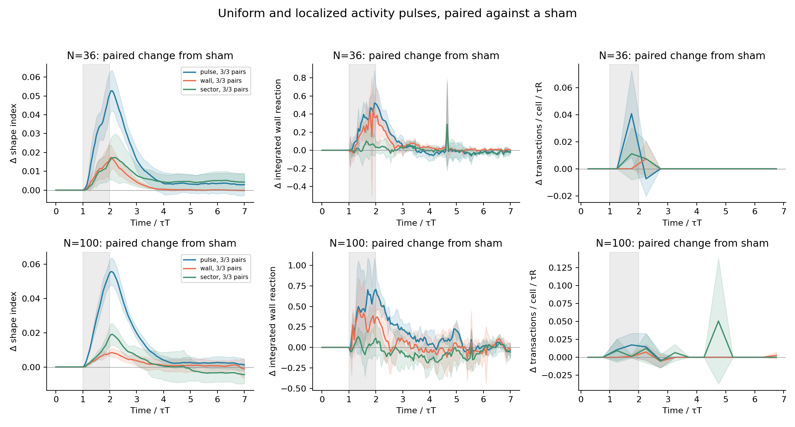
Baseline μ=0.25; μ=1 during t/τT∈[1,2). Wall activation selects film centroids within one code-length unit of the circular wall; sector activation covers ±π/4. Curves subtract the same-seed sham, using only pairs whose full trajectories completed. Bands are SD across paired seeds; missing pairs can bias the surviving sample. The protocols have equal peak amplitude but are not matched for total noise input or activated film count.
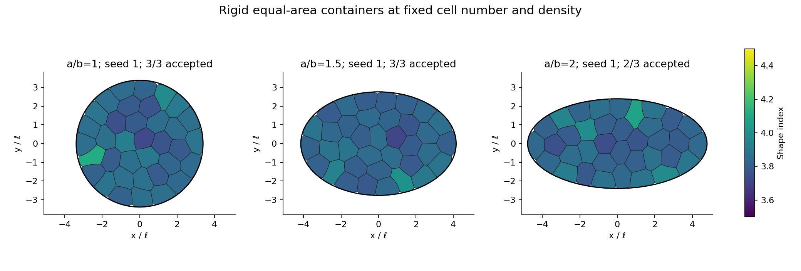
N=36, ρ=1.2, W=1, μ=0.5; all walls have area 36 in code units. Final frames at 10 τT after 5 τT warmup; same-seed examples where available. Ellipse initialization is an area-preserving deformation of the circular tiling, followed by relaxation. Container shape also changes global confinement and orientation; these are not isolated local-curvature interventions.
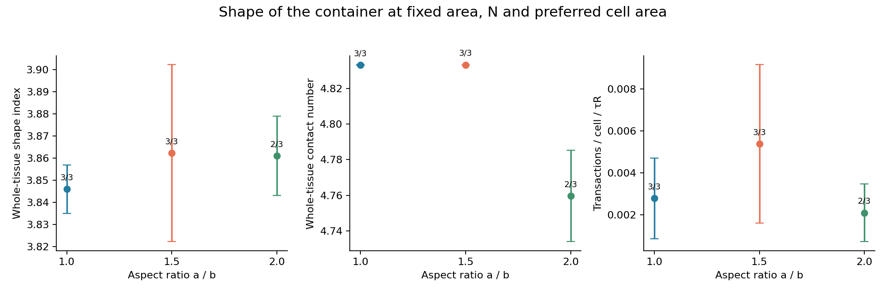
Means ± seed SD over completed trajectories. The ellipse projection uses its actual surface normal. Local-curvature profiles are exported separately; wall distance for ellipses uses a 1024-point wall sample.
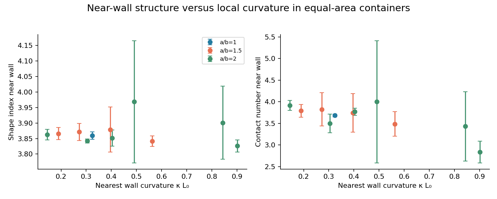
Centroids within L₀ of the wall. First average cell-frames within each seed and curvature bin; error bars are SD across seeds. Curvature is that of the nearest sampled wall point; markers use the seed-averaged curvature within each bin. Global shape, wall orientation and local curvature covary; this association alone does not establish causality.
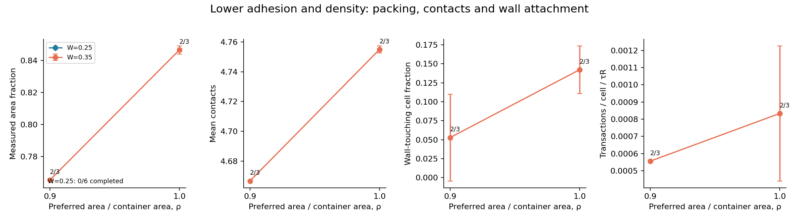
N=36, μ=0.5; 5 τT warmup and 10 τT observation. Mean ± seed SD. Nominal density ρ is a control parameter, whereas packing is measured. Failed geometries are excluded and their counts are reported.
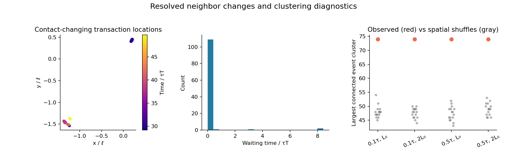
Illustrative completed long run chosen for the largest event count in that family: N=36, W=1.0, μ=0.5, seed=3; 114 contact-changing transactions. This is not an unbiased example. Events connect within both distance and time cutoffs; nulls shuffle observed positions across fixed event times (16 shuffles). Large clusters or back-to-back reversals are not by themselves evidence for physical avalanches.
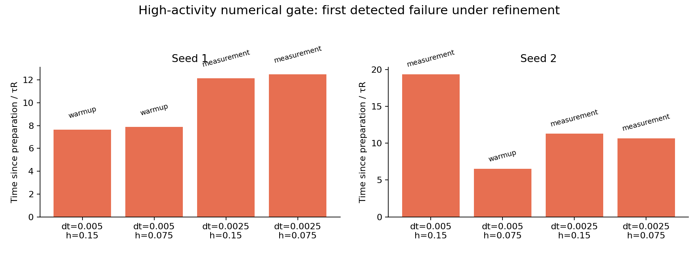
N=36, W=1, ρ=1.3, μ=1.5. Geometry checked every timestep after preparation; preparation retains checks every 0.5 τR. Bars report time after preparation to the first failed check; labels identify the stage. This is not a physical instability threshold. Seed labels are shared but Brownian paths and initial meshes are not coupled under refinement. These short first-passage comparisons cannot establish stochastic convergence.
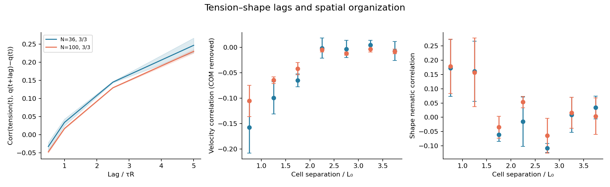
W=1, ρ=1.2, μ=0.5; completed seeds, means ± seed SD. Tension is a length-weighted incident-film average per cell, not a tracked contact tension. Lag correlations are descriptive, not causal. Spatial velocities have instantaneous whole-tissue translation removed; shape tensors come from polygon area moments. Pair counts do not represent independent replicas.
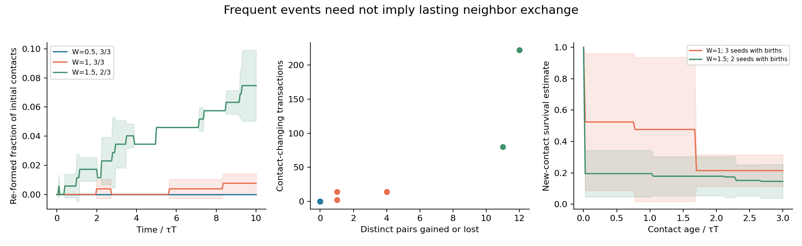
N=36, ρ=1.2, μ=0.5. Left: initial-neighbor overlap minus unbroken survival identifies re-formed contacts. Middle: each dot is one completed seed; repeated changes can involve only a few distinct cell pairs. Right: product-limit survival of contacts born during observation, excluding initial left-censored episodes and retaining right censoring. Curves average seed estimates, not pooled contact episodes; bands are seed SD. Sampled wall-contact residence episodes are exported separately and have 0.5 τR resolution, including possible remeshing-induced flicker.
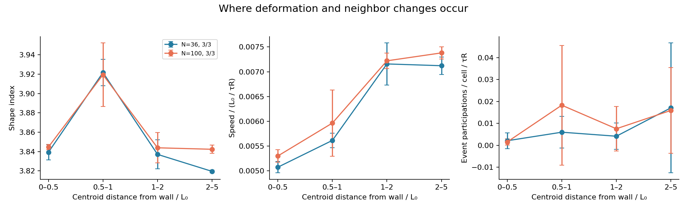
W=1, ρ=1.2, μ=0.5; mean ± seed SD. Event participation counts each affected cell once per contact-changing transaction and divides by observed cell-time in the distance bin. Bins use the preceding stored cell centroids (0.5 τR resolution). The CSV also separates cells with and without any free film: distance from the container wall alone does not identify tissue interior.